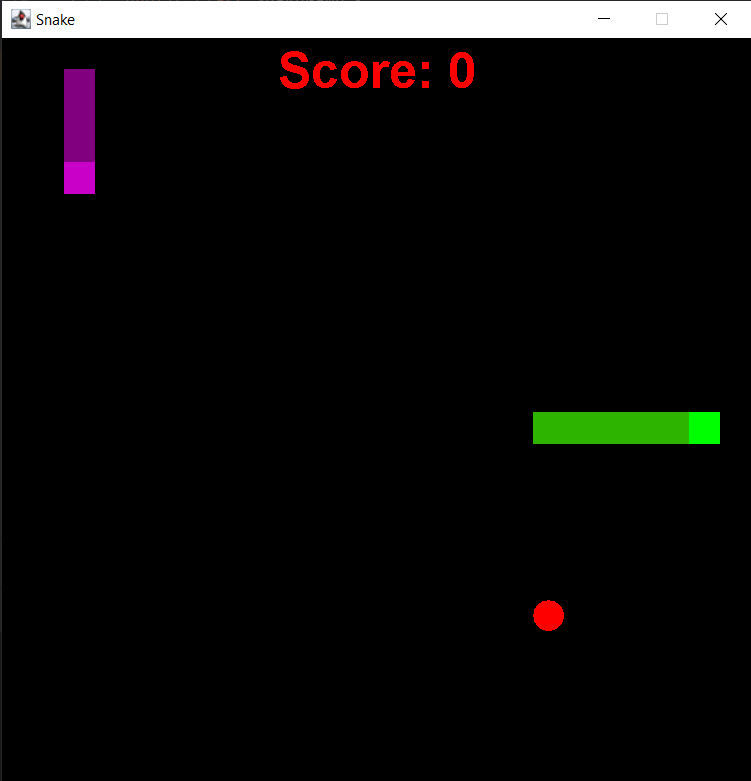
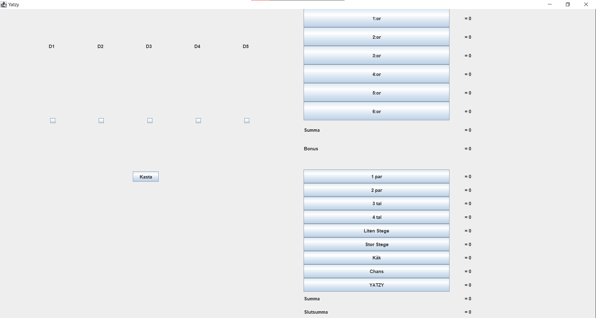
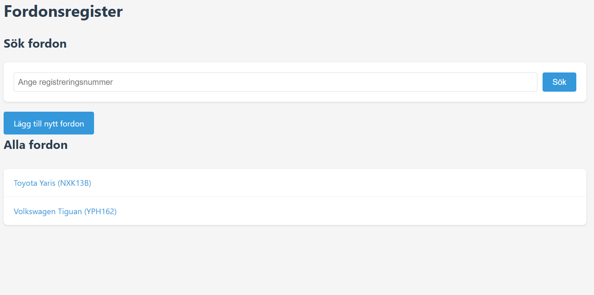

Min Portfolio
Här är några av mina bästa projekt

Java
Snake-spel
Ett klassiskt Snake-spel utvecklat i Java med GameFrame, GamePanel och objektorienterad design. Slutprojekt i kursen Programmering 2.

Java
Yatzy-spel
En fullständig implementation av det klassiska tärningsspelet Yatzy utvecklat i Java med alla spelets regler och funktioner. Slutprojekt i kursen Programmering 1.

PHP
Fordonsregister
Ett webbbaserat fordonsregister utvecklat i PHP med databaskoppling för att hantera och spåra olika typer av fordon. Projekt i kursen Webbserverprogrammering 2.